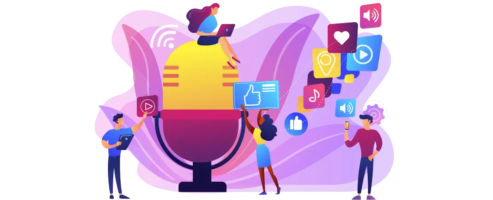
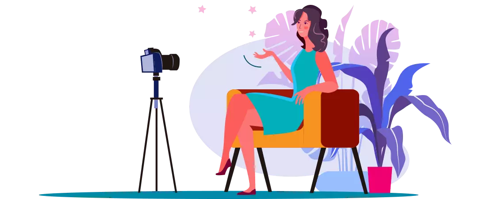
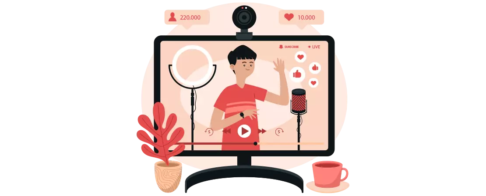
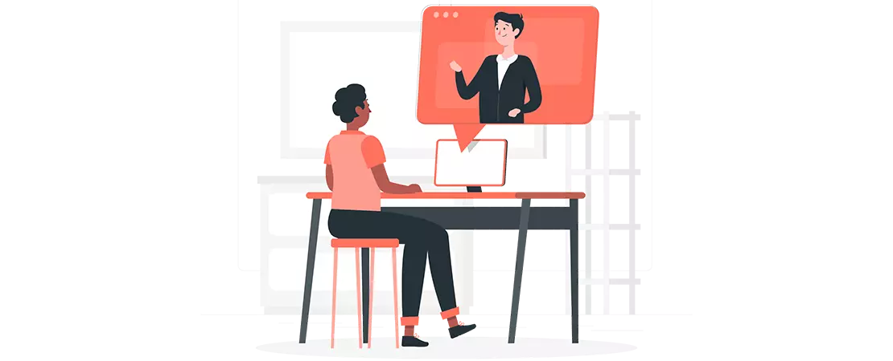

Embarking on the journey of being a YouTuber and selecting the right equipment for YouTube is not simple. So, today we are here to break down some of the most basic equipment for YouTube channel to make videos. If you think you have what it takes to make it as a YouTuber, you can substitute your talent in place of the much expensive equipment used by many established and seasoned YouTubers.
Many YouTubers buy YouTube subscribers that are real people and use YouTube actively, in order to spark things up engagement wise, get more views on channel and build up from there.
The YouTubers earning five or six figures annually from YouTube use a wide range of very specific and quality equipment. When you begin to earn from YouTube, you can always re-invest in your channel and purchase sophisticated equipment which will notch up your game.
Equipment required for starting a YouTube channel are as follows:-
- Basic Microphones available
- Choosing a reliable Tripod
- Affordable Lighting Equipment
- Editing Software required
Without wasting any more valuable time, let’s dig in and learn about all the YouTube equipment for beginners.
Camera
The most essential and probably most expensive equipment in the YouTube gear, without a second thought, is a camera to record your videos. Hence, you have to make a smart decision taking in account your financial flexibility and the best options available.
Where on one hand, it is perfectly fine to use your smartphone or iPhone as a beginner’s vlog camera, but when the time comes to choose a more sophisticated recording device, you should be aware of all the available options in order to make an informed decision.
Thus, cameras are a crucial YouTube recording equipment for ultra class video recording and ultimately growing the youtube channel.
Let’s learn about the different types of cameras you can use:
DSLR Video Camera
They provide a wide range of video quality from 1080p to 4K resolution depending upon the model. Along with their adaptability to low light environment, they come with an added advantage of interchangeable lenses. They contain a large image sensor which gives you control over what your video clip should look like. One of the best DSLR is Canon EOS Rebel T5i. DSLRs are the most popular cameras YouTubers use.
Mirrorless Video Camera
These cameras are lighter and thinner than DSLRs but are more user friendly. They are not suitable for low light environment. The auto-focus and the image stability contribute in clarity of photos as well as videos. The best mirrorless cameras in the market right now are FujiFilm X-T4 and Sony A7R IV. It is perfect as a beginner vlog camera.
Point and Shoot Video Camera
These are even smaller and cheaper than a mirrorless camera. Due to an included LCD viewfinder, you already get a processed view of what you are filming. A smaller image sensor provides more zoom. The best point and shoot video camera available in the market right now include the Canon PowerShot Elph 180/ IXUS 185 and the Sony CyberShot DSC- W800.
Sports and Action Video Camera
A sports and action camera is specifically designed to capture the essence of outdoor activities such as riding a motor bike or bungee jumping. They are easy to handle and can be even strapped to helmets and other objects. They provide great image stabilization and at the same time are capable of recording up to 4K resolution videos. Best action camera in market currently include the GoPro Hero 8 Black and the DJI Osmo Action.
Digital Camcorders-
The over all quality of these cameras does not compare to that of the DSLRs but they are the best vlogging camera that YouTubers use in terms of price, versatility and flexibility. The tilting and rotating LCD screen along with the ability to record on different platforms such as hard drives, DVDs etc. The best camcorder available include the Sony FDR-AX33 and Canon Legria HF G60.
Microphone

Well, along with video quality you have to provide audio quality for your viewers to find value in your content. Since, the internal microphones of the video cameras do not do the trick, you have to empower your voice with an external microphone.
When it comes to external microphones, they also make an important part of YouTube filming equipment for building an audience on Youtube. Lets now learn about the different types of microphones you can use while recording a video:
USB Microphones
Probably the most cost-effective audio recording device, USB mics are the most widely used mics by YouTubers. Providing high quality recording, USB mics do not require any additional equipment for set up, all you have to do is plug in it the USB port of your laptop or desktop. The best available USB Microphones available in the market right now include the Blue Yeti Mic and the Rode NT-USB.
Condenser Microphones
These are used for recording acoustics as well as speech. They provide very wide frequency response; thus, they are capable of recording even the feeblest background music. They offer high quality sound output. The best condenser microphones available include the Blackout Spark SL and the Rode NT1.
Shotgun Microphones
These are usually used along with DSLRs. They are really good for recording the voice from a distance and do not record any background noise. Since, they are highly directional, they have to be pointed straight at the target. Some of the best shotgun mics available in the market right now include the Sennheiser MKH416 Super Cardioid Condenser Microphone and the Rode NTG-3 Location Sound Booming Kit.
Lavalier Microphone-
More commonly known as lapel microphones, these are really small microphones that can be clipped on your clothes near your mouth. Since, they are clipped close to mouth, they do not pick up much background noise. The best lavalier mics available in the market include the Rode Smartlav+ and the Audio-Technica Pro 70.
Tripod

No viewer wants to watch a video that is shaky. Hence, to keep your videos sturdy as well as to ensure your camera gear’s safety, a tripod becomes an essential part of your vlogger equipment. A tripod is a three-legged stand that supports the weight of your camera fairly well. A tripod provides stability against the downward as well as the horizontal forces and movements about the horizontal axes.
Some of the best tripods available in the market are the Manfrotto 190XPro4 and the Novo Explora T5.
You should be interested in:-
Youtube channel monetization requirements 2021Lighting Equipment

The next crucial equipment for starting a YouTube channel is the lighting equipment. Lighting equipment becomes highly necessary if you are recording your videos indoor to even out the dim lighting of your set up. Ambient lighting is a factor that is often ignored by many amateur YouTubers, but lighting holds the power to set the mood for the video.
If the frame is dark or the exposure is very less, then to make it visible to our eyes, the ISO of the camera can be increased but the problem arises when due to the increased ISO the frame has a lot of grains / noise (unwanted dots). Therefore, it is advised to shoot with minimum required ISO and to help with this, artificial lights are used for a better exposure which results is less grain formation in the frame.
That being said, let’s learn about the different types of lights required:
Key Light
A key light is the main source light in your studio. If you are shooting outdoors, sunlight becomes your key light.
Fill Light
A fill light is used to cancel shadows formed due to the key light
Back Light
A back light is used to separate the subject from background.
For a casual look, fill light is powered at half the power of a key light but if you are a beauty vlogger, you want your face to be clear, so, key light and fill light are kept at even power. The ideal angle for keeping both, key light and fill light, is at 45º from the subject.
Hence, artificial lights are an essential part of the vlogger equipment.
Video Editing Software

After the recording process is over, then comes the post-production shenanigans. The final step before uploading your video is by default- The Editing. With the competition being too high on YouTube, you have no choice but to deliver only your best efforts. Remember- A well-edited video reflects your degree of professionalism!
Editing your video before uploading becomes crucial because it allows you to cut out any unnecessary shots, long awkward pauses, terrible shots and you also get the chance of adding necessary background music to your video. It allows you to add pattern interrupts such as jump cuts, changing camera angles, a change in look etc. without breaking the natural flow of the video and helps you to maximize the audience retention.
Some of the best video editing software available in the market include the Adobe Premiere Elements 18, the Corel VideoSudio and Filmora. This concludes our list of all the equipment needed for YouTube channel. Begin your YouTube journey today!
Stay tuned for more such blogs! Feel free to share
Also Read: How to improve Youtube videos organic reach